Team
SiMuR is part of the Department of Electrical, Electronic, Computer and Systems Engineering of the University of Oviedo, at the Gijón campus.
Faculty members
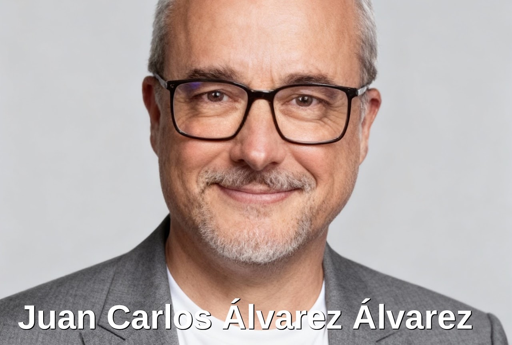
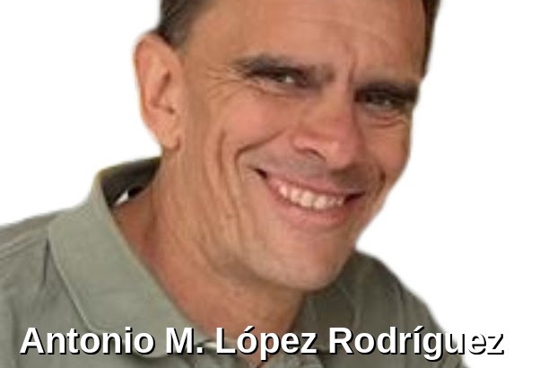
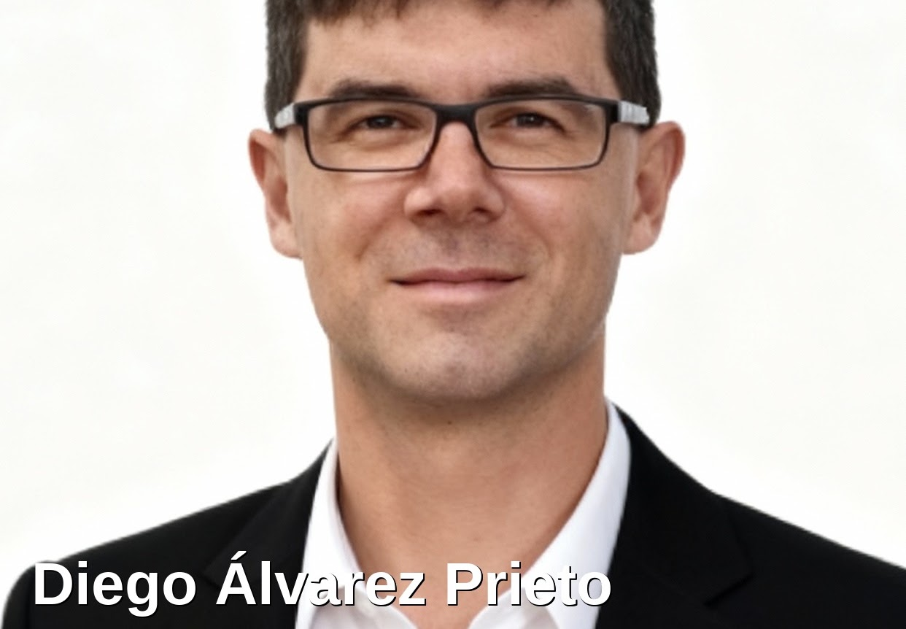
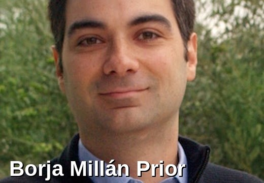
PhD students
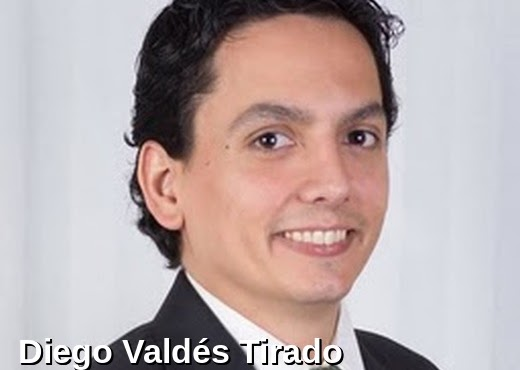
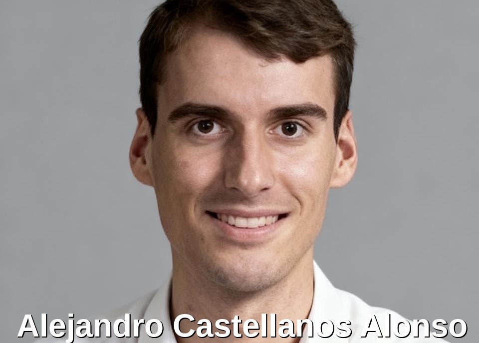
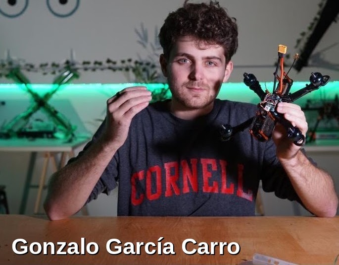
Collaborators
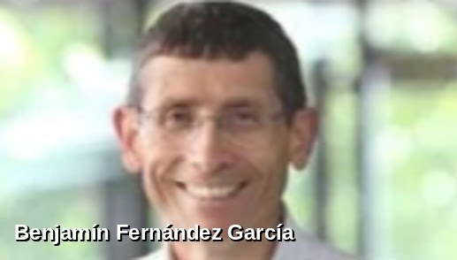
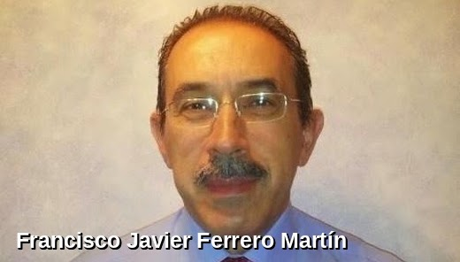
Alumni, visitors and friends
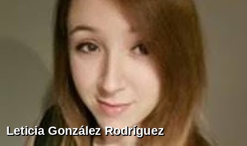
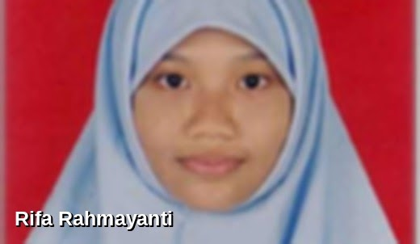
Work with us
We welcome enquiries from prospective PhD students, visiting researchers, and clinical, sport or industrial partners who need movement measured outside the laboratory. Companies and institutions can see what a collaboration looks like. Write to juan@uniovi.es.